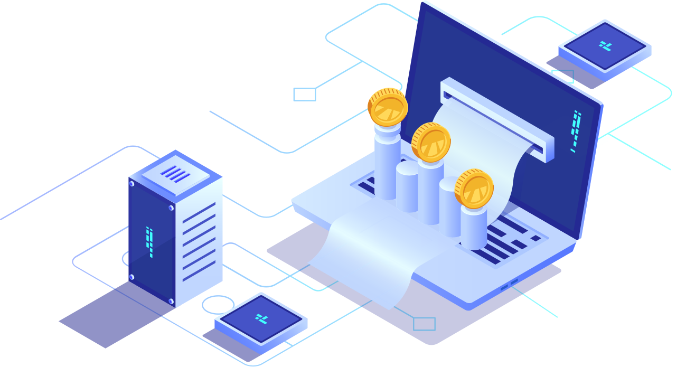
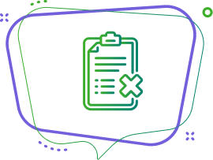
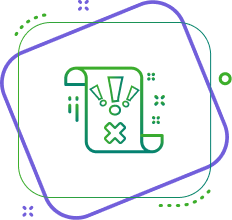
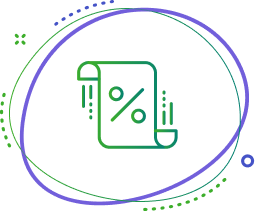
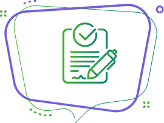

Дізнайтеся свою
кредитну історію просто зараз!
З’ясуйте свої шанси отримати кредит у банку чи у сервісі Moneyveo.
Заповніть коротку форму – і
відповідь надійте за 5 хвилин.
Безкоштовно – 1 раз на місяць.

Чому треба знати свою
кредитну історію

1 Щоб з’ясувати причину відмови у кредиті
Погана кредитна історія (далі – КІ) – найчастіша причина відмов у кредитах. У минулому ви
мали
прострочення за сплатою боргу? Тоді вам обов’язково треба покращувати вашу історію! Сервіс
Moneyveo лояльно ставиться до клієнтів і не відмовляє у коштах через невеликі прострочення.
Оформлюйте у ньому невеликі позики та вчасно їх сплачуйте – це може підвищити ваш кредитний
рейтинг та збільшити шанси на отримання нових позик у банках.

2 Щоб уникнути несподіваної
відмови у новому кредиті
Аби взяти кредит у банку, треба витратити багато часу на
підготовку,
особливо якщо потрібна велика сума. Але банк може вам відмовити через погану КІ. Тому варто
заздалегідь переконатися, що у вас позитивна історія та гарний рейтинг і не витрачати зусиль
даремно.
3 Щоб переконатися в актуальності інформації про
закриті кредити
Чи вся інформація про ваші кредити, яку отримує бюро, достовірна
та
актуальна? Іноді дані передаються із запізненням або з помилками, що негативно впливає на
КІ.
Краще переконатися у відсутності проблем, а якщо вони є, то звернутися до бюро і виправити
їх
заздалегідь.

4 Щоб миттєво з’ясувати свої
шанси отримати кредит
Не треба нікуди їхати чи дзвонити, щоб дізнатися свою кредитну
історію
та рейтинг. Просто заповніть реєстраційну форму – і впродовж 5 хвилин інформація з’явиться
на
екрані.

5 Щоб отримати кредитну історію безкоштовно
Зазвичай послуга отримання кредитної історії та рейтингу платна. Але якщо ви заповните реєстраційну форму та надасте згоду на отримання даних із бюро кредитних історій, Moneyveo здійснить оцінку вашого кредитного рейтингу та надасть дані вашої КІ абсолютно безкоштовно. Тож один раз на місяць ви можете безкоштовно отримати на нашому сайті дані своєї кредитної історії. Заповнення реєстраційної форми не зобов'язує вас укладати кредитний договір із Moneyveo.